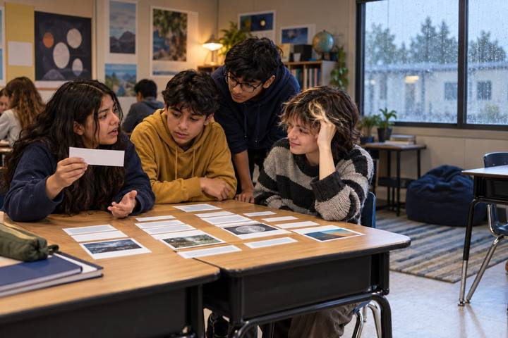

Học tập của học sinhdành cho Lớp 6–8, Lớp 9–12
Hợp đồng bạn học AI
Học sinh phân loại những cách dùng AI giúp xây dựng việc học và những cách thay thế việc học, rồi đặt một mục tiêu SMART, viết một bản hợp đồng AI cá nhân và ghi nhật ký sử dụng trung thực trong hai tuần.